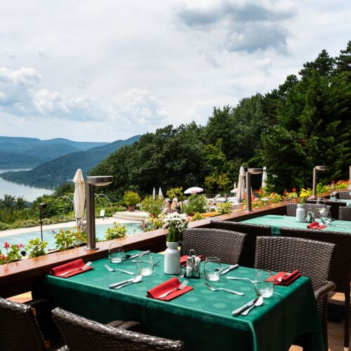
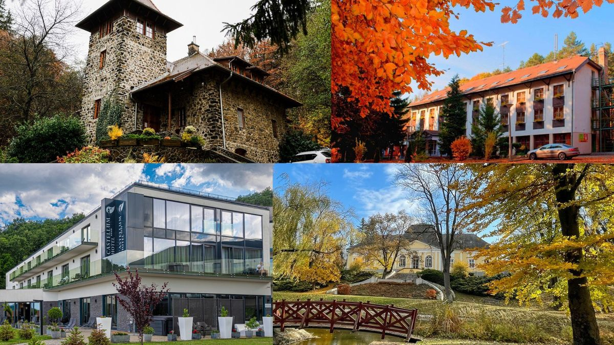
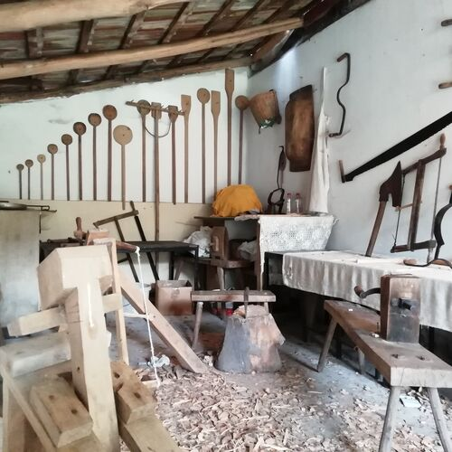
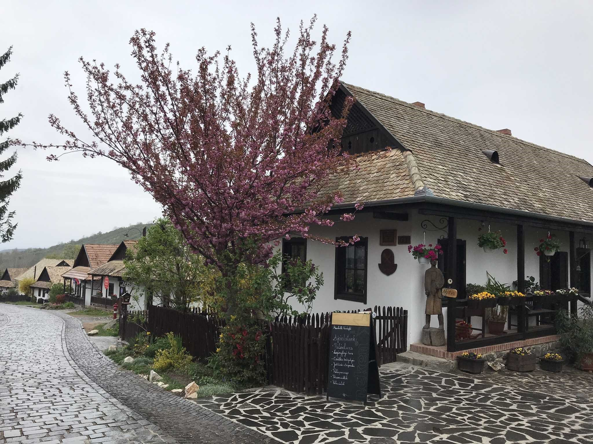
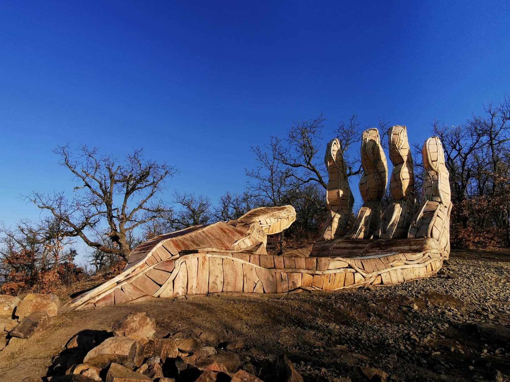
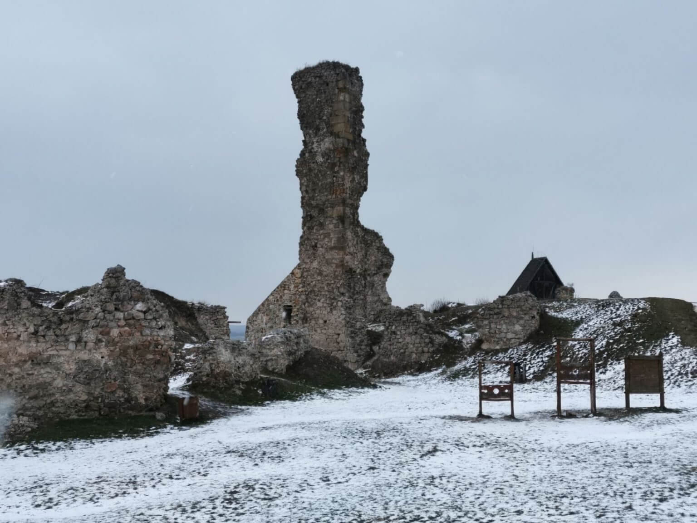

Nógrád megye
Csodái
“Egy csodálatos világban élünk, amely tele van szépséggel és kalanddal.
ha nyitott szemmel keressük őket.” – Jawaharlal Nehru

Látnivalók, kirándulóhelyek
Irány a természetHa Magyarország felfedezetlen kincseire vágysz, ahol a természet, a történelem és a nyugalom kéz a kézben jár, akkor Nógrád megye a te helyed. Ez a kis megye az ország északi részén található, és bár területileg kicsi, látnivalókban és élményekben annál gazdagabb.

Pihenés
Szálláshely ajánlóNógrád megye szállásai között mindenki megtalálja a számára ideális pihenőhelyet: a kényelmes wellnesshotelektől és hangulatos falusi vendégházaktól kezdve a romantikus kastélyszállókig. Akár természetközeli kikapcsolódásra, akár aktív túrázásra vágysz, a megye változatos szállástípusai tökéletes kiindulópontot kínálnak a felfedezéshez.

Programajánló
Élmények, kalandokNógrád megye számos élményprogramot kínál. Az aktív kikapcsolódás szerelmeseinek kerékpártúrák, lovastúrák, kalandpark. Fesztiválozóknak falunapok és Palóc Fesztiválok, kézműves foglalkozások, néptáncbemutatók. Családoknak erdei kisvasutak, kalandparkok, valamint horgász- és vízi sportlehetőségek.
Szálláshelyek
Összes szálláshely NógrádbanNógrád megye szállásai között mindenki megtalálja a számára ideális pihenőhelyet: a kényelmes wellnesshotelektől és hangulatos falusi vendégházaktól kezdve a romantikus kastélyszállókig. Akár természetközeli kikapcsolódásra, akár aktív túrázásra vágysz, a megye változatos szállástípusai tökéletes kiindulópontot kínálnak a felfedezéshez.
Hotelek
Nógrád megyeÍme egy könnyen követhető ajánló arról, hogy milyen 3–4 csillagos szállodák közül
választhatnak
a turisták Nógrád megyében és közvetlen környékén, ha pihenésre és wellnessre vágynak —
így mindenki
megtalálhatja a maga stílusához illőt:
3*: 🌿 3 csillagos, barátságosabb árkategória – jó választás rövidebb
pihenéshez
• Tó Wellness Hotel Bánk – klasszikus 3 csillagos wellness-hotel a Bánki-tó partján,
ideális vízparti
pihenéshez, fürdőzéssel és alap wellness-szolgáltatásokkal.
• Cédrus Club Hotel (Balassagyarmat) – kedvező árú, egyszerűbb wellness-élmény, jó
választás túrák
vagy kirándulások mellé.
Panziók
Vendégházak, apartmanokAki pihenésre, természetközeli élményekre vagy baráti/családi kikapcsolódásra vágyik,
könnyen megtalálhatja a számára legjobb apartmant vagy vendégházat. 🌳🏡
🏡 Vendégházak közt találsz különleges, rusztikusabb helyeket (pl. Palócliget Vendégház
– Kétbodony
vagy Galagonya Vendégház – Salgótarján), melyek különösen hangulatosak csendes, vidéki
pihenéshez.
🛌 Apartmanok gyakran önellátóbbak, így önellátó nyaraláshoz, túrákhoz vagy városi
felfedezőutakhoz is praktikusak.
🌟 A legtöbb helyen SZÉP-kártyát is elfogadnak, és sok vendégháznál van parkoló, Wi-Fi,
illetve szalonnasütési
vagy kertkapcsolatos lehetőség is.
Utazási Praktikák
Hogyan közlekedj és spóroljNógrádban a várakhoz gyakran meredek út vezet. Hasznos infók: Parkolási díj Somoskőnél kb. 500-1000 Ft. Buszjáratok Salgótarjánból óránként indulnak a főbb látványosságokhoz. Érdemes készpénzt hozni, mert a kis falvakban (pl. Kazár) kevés az ATM!
Mauris lacinia pretium
Vestibulum#8 Suspendisse suscipit nulla sed nisl fermentum, auctor suscipit nunc rhoncus. Proin faucibus metus diam, nec hendrerit purus pharetra in.
Bakancsos Kalandok
Kilátók és tanösvényekLátogasson el az Ipolytarnóci Ősmaradványokhoz, ahol 17 millió éves leletek várják. A Prónay-kilátóból (Alsópetény) tiszta időben a Tátra csúcsai is látszanak. A Medves-fennsík bazaltkúpjai pedig Európában is egyedülálló látványt nyújtanak.
Bemutató
Galéria
Fedezd fel Nógrád megye varázslatos hangulatát képeinken keresztül!
Galériánk ízelítőt ad a megye festői tájairól, történelmi várairól, hangulatos
falvairól és természeti kincseiről – hogy lásd, miért érdemes személyesen is
ellátogatni ide.
{kind=link}
{kind=link}
{kind=link}
{kind=link}
{kind=link}
Nógrád bemutatkozó kisfilmje.
Engedd, hogy elvarázsoljon Nógrád megye szépsége!
Nógrád lankáin szellő szalad, erdők ölén bújik a vad. Várak őrzik múlt idők meséjét, patak csillan, tükrözi az ég kékjét. Barangolj itt, hol béke vár, hol minden ösvény új csodát kínál. Nógrád megye, szíved dalol, mert itt a természet maga szól!
Blog
Hozzászólás
Oszd meg velünk te is élményeidet Nógrád megye csodás tájairól!
Írj bátran a kirándulásaidról, felfedezéseidről és kedvenc
helyeidről, hogy mások is kedvet kapjanak ellátogatni ide.
-

Hollókő palócházak
utcaképA hollókői palócházak a Palócföld hagyományos népi építészetének kiemelkedő emlékei, fehérre meszelt falaikkal, tornácos homlokzatukkal és zsúpfedeles vagy cseréptetős kialakításukkal. Az egységes utcakép és az eredeti berendezés ma is hitelesen mutatja be a 19. századi palóc falusi életmódot.
-

Hollókő
utca részletHollókő utcái macskakövesek és nyugodtak, a fehérre meszelt parasztházak között sétálva olyan érzés, mintha megállt volna az idő. A domboldalra kúszó kis utcákból gyönyörű kilátás nyílik a falura és a környező tájra.
-

Hollókő
Kézműves házHollókő kézművesei a palóc hagyományokat őrzik és adják tovább: hímzéseik, fazekas- és fafaragó munkáik mind a múlt történeteit mesélik. A kis műhelyekben járva nemcsak tárgyakat, hanem élő népi kultúrát is talál az ember.
-
Nógrád
vár részletA nógrádi vár meredek sziklán állva uralja a környéket, falairól messzire ellátni a Börzsöny és a Cserhát dombjai felé. Romjai ma is a középkor hangulatát idézik, és erős történelmi jelenléttel töltenek meg minden látogatást.
-
Nógrádi vár
vár romjaiA nógrádi vár romjai csendesen őrzik a múlt emlékeit, a megmaradt kőfalak és bástyák között sétálva könnyű elképzelni a középkori életet.
-
Nógrádi vár
eredeti vár rekonstrukciójaAz eredeti nógrádi vár a középkorban fontos végvár volt, amely stratégiai szerepet játszott az északi határ védelmében. Masszív kőfalai és tornyai egykor hatalmat és biztonságot sugároztak, mielőtt a történelem viharaiban rommá váltak.
-
Felsőtold
Kéz-kilátóHollókő és Felsőtold között, az Országos Kéktúra nyomvonala mellett meglepően egyedi formájú kilátó készteti megállásra a túrázókat.
-
Felsőtold
fa szerkezetű kilátóA felsőtoldi Kéz-kilátó a Börzsöny lankái fölött nyújt panorámát, ahonnan tiszta időben a környező hegyek és völgyek látványa tárul elénk. Fa szerkezetű, egyszerű, de hangulatos építménye ideális kiindulópont rövid túrákhoz és természetfotózáshoz.
-
Felsőtold
"Isten tenyere" kilátóA 2020 végén felállított, egyedi alkotást az „Isten tenyere” kilátóterasznak is szokták nevezni. A „kéztő” felől néhány lépcsőn jutunk fel a tenyérbe, amely tökéletes hely a pihenéshez vagy akár a hüvelyujjra is biztonságosan felmászhatunk. Nemcsak az izgalmas építmény, de a panoráma is marasztal: festői táj tárul elénk valamint rálátunk Felső- és Alsótold házaira is.
-
Buják
LátképBuják egy hangulatos nógrádi falu a Cserhát szívében. Érdemes ide kirándulni a csendes természeti környezet, az erdők, valamint a palóc hagyományok és vendégszeretet miatt.
-
Buják
Sasbérci kilátóA bujáki Sasbérci-kilátó a Cserhát erdős dombjai fölé emelkedik, és lenyűgöző panorámát nyújt a környező falvakra és völgyekre. A Sas-bérc (470 m) tetején magasodó építmény nem egy szokványos kilátótorony, terméskőből emelt, bástyaszerű építmény favázas házakra emlékeztető, körbejárható teraszos építmény.
-
Buják
NépviseletA bujáki népviselet a palóc hagyományokat tükrözi, jellegzetes hímzésekkel, színes szoknyákkal és férfiaknál díszes ingekkel. A viseletet különleges alkalmakon, ünnepeken és falusi rendezvényeken ma is szívesen hordják, így őrizve a helyi kulturális örökséget.
Hozzászólás
Vélemény
Ha valaki Nógrádban kirándult, és szeretné megosztani élményeit, tapasztalatait
vagy tippjeit a legjobb kirándulóhelyekről, itt könnyedén megteheti.
Így mások is inspirációt meríthetnek a következő túráikhoz.